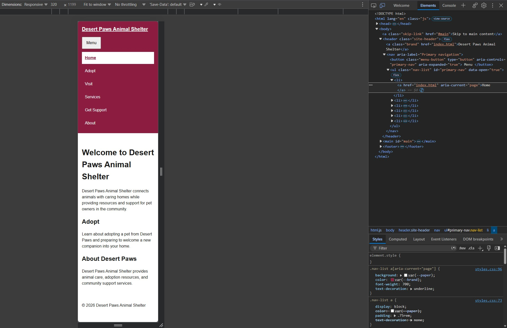
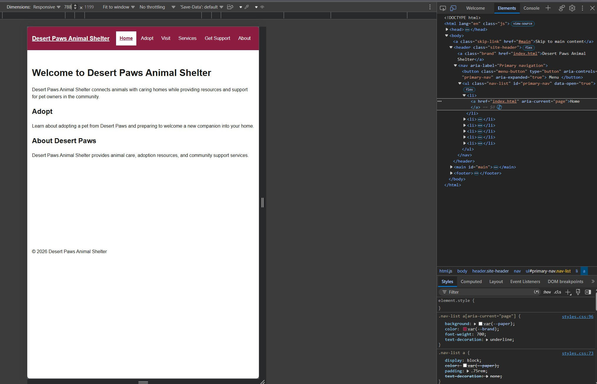

Student: Marisa Gregory Site: Desert Paws Animal Shelter - A local animal shelter that provides adoption information, visitor resources, and community support services.
| Destination | Final label | Order/group rationale |
|---|---|---|
| Home page | Home | Placed first so visitors can easily return to the main page. |
| Adoption information | Adopt | Placed near the beginning because finding animals and adoption information is a priority visitor task. |
| Visiting information | Visit | Placed after Adopt so visitors can quickly find shelter hours, location, and visiting information. |
| Shelter services | Services | Provides direct access to information about services offered by the shelter. |
| Support information | Get Support | Provides a clear destination for visitors who need help or shelter resources. |
| Organization information | About | Placed last because organization background is useful but less urgent than adoption, visiting, and support tasks. |
Method and widths tested: I first confirmed that the narrow layout worked correctly at 320 CSS pixels. To identify an appropriate content-based breakpoint, I temporarily adjusted the CSS so the header and navigation used the proposed wide horizontal layout and allowed the content to extend horizontally when space became insufficient. I then gradually resized the viewport and compared widths including 776, 788, 790, and 826 CSS pixels. At 776 CSS pixels, the site name and Get Support label wrapped, showing that the wide layout was becoming too crowded. At 788 CSS pixels and above, the site name and all navigation labels fit on one line without clipping or overlap.
First content failure: At 776 CSS pixels, the wide horizontal layout became crowded. The Desert Paws Animal Shelter site name wrapped onto two lines, and the Get Support navigation label also wrapped onto two lines.
Chosen breakpoint in relative units: I chose 49.25em, which is approximately 788 CSS pixels at the browser's default 16-pixel font size. At 787 CSS pixels, the narrow stacked navigation remains in place. At 788 CSS pixels and above, the header changes to the wide horizontal layout, where the site name and all navigation links fit without clipping, overlap, or unwanted wrapping.
Long-label and zoom retest: I temporarily replaced shorter navigation labels with longer versions and tested the layout again at narrow widths, around the breakpoint, and at 200% browser zoom. The navigation reflowed without clipping, overlap, or hidden links, and all text remained readable and usable. No additional repair was needed.
| Condition | Expected | Observed | Result and repair |
|---|---|---|---|
| Keyboard: button, Tab, Escape, focus | Tab should reach the skip link, menu button, and all visible navigation links. Enter and Space should operate the native menu button. Escape should close an open menu and return focus to the menu button. Hidden navigation links should not receive focus. |
The skip link became visible when focused, the menu button was reachable by keyboard, and Enter and Space both opened and closed the menu. Tab moved through
the visible navigation links with visible focus. Escape closed the open menu and |
Pass. All required keyboard and focus behaviors worked as expected. No repair was needed. |
| Pointer/touch targets | The menu button and navigation links should provide comfortable targets and be selectable without clipping, overlap, or accidental activation. | The menu button and navigation links were clearly visible and easy to select. The controls did not overlap, and spacing remained comfortable between navigation items. | Pass. Pointer targets and spacing worked as expected. No repair was needed. |
| 320px and breakpoint region | At 320 CSS pixels, the layout should remain usable without clipped text, horizontal scrolling, overlapping elements, missing links, or cut-off focus outlines. Around the breakpoint, the layout should transition without becoming broken or crowded. | At 320 CSS pixels, the narrow layout remained readable and usable without clipping, overlap, missing links, or horizontal scrolling. Around the 49.25em breakpoint, the stacked navigation remained in place below the breakpoint and changed to the horizontal wide layout at approximately 788 CSS pixels without clipping or overlap. | Pass. The narrow layout and breakpoint transition worked as intended. No repair was needed after the final breakpoint was selected. |
| 200% zoom | At 200% browser zoom, every navigation link should remain available, text should remain readable, the header should reflow when needed, important content should not overlap, and keyboard focus should remain visible. | At 200% zoom, all navigation links remained available and readable. The header reflowed without clipping or overlap, and keyboard focus remained visible. | Pass. The layout remained usable at 200% zoom. No repair was needed. |
| JavaScript unavailable | With JavaScript unavailable, the menu button should remain hidden and all navigation links should remain visible and usable. | With JavaScript disabled, the menu button was not displayed and all primary navigation links remained visible and usable. | Pass. The no-JavaScript baseline worked as required. No repair was needed. |
| CSS unavailable / wide recovery | Without CSS, the HTML should remain understandable, the navigation links should remain usable, and the content order should remain logical. After closing the narrow menu and widening the viewport, the wide navigation should become visible regardless of the previous narrow-menu state. | With CSS disabled, the page remained understandable and the navigation links remained usable in a logical document order. After closing the narrow menu and widening the viewport beyond the breakpoint, the complete horizontal navigation became visible again. | Pass. Both the CSS-failure test and wide-layout recovery behaved as expected. No repair was needed. |
Screenshot filenames and what each proves:
Narrow (320px) Viewport Menu Navigation

narrow-width-navigation.jpg shows the expanded navigation at 320 CSS pixels with all navigation links visible and usable without clipping or overlap.
Wide (788px) Viewport Menu Navigation

wide-navigation.jng shows the horizontal navigation at the wide-layout breakpoint with all navigation destinations visible on one line.
Tester relationship (no name needed): Family members (mother and brother)
Two tasks attempted: Find the shelter's visiting information and find where to get support from the shelter.
What the tester did or said: Both testers were able to locate the correct navigation destinations without assistance. They found the site easy to navigate and did not show any confusion while completing either task.
Change made or justified: No change was necessary because both testers completed the tasks successfully and found the navigation clear and easy to use.
The script selects the menu button and navigation list, then adds a js class so the page knows JavaScript is available. It also reveals the Menu button, which stays hidden when JavaScript is unavailable.
The setMenuState() function keeps the menu's open or closed state consistent by updating both aria-expanded and the navigation list's data-open value.
Clicking the Menu button toggles the navigation open and closed. Because it is a native button, Enter and Space already work automatically. Pressing Escape closes the menu and moves focus back to the Menu button.
Tool and purpose, or none: I used ChatGPT for assistance in developing the minimal JavaScript required for the responsive navigation. AI was also used to reformat the provided code into a more legible structure before code execution began. This formatting did not change or edit the code itself.
Prompt/task: I asked ChatGPT to suggest minimal JavaScript that would support the required menu behavior, including state synchronization, menu toggling, Escape-key behavior, and focus return.
Accepted, changed, or rejected output: I reviewed the suggested JavaScript and used the portions that matched the assignment requirements. I remained responsible for understanding and explaining each accepted line of JavaScript.
How I verified it: I personally tested the accepted JavaScript by confirming the menu opened and closed correctly, Enter and Space worked through the native button, Escape closed the menu and returned focus, and the wide navigation remained visible after resizing.